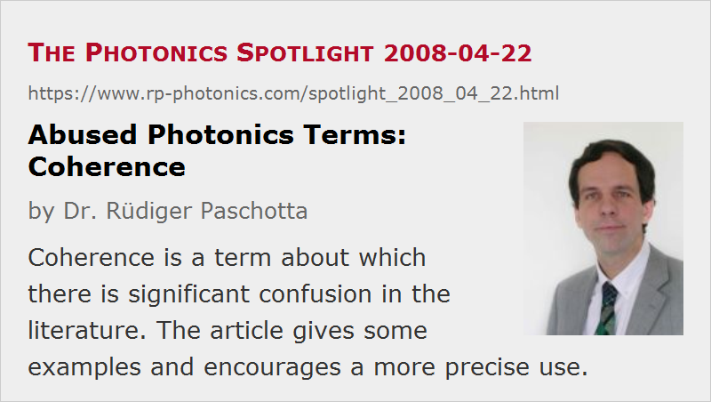

Abused Photonics Terms: Coherence
Posted on 2008-04-22 as a part of the Photonics Spotlight (available as e-mail newsletter!)
Permanent link: https://www.rp-photonics.com/spotlight_2008_04_22.html
Author: Dr. Rüdiger Paschotta, RP Photonics Consulting GmbH
Abstract: Coherence is a term about which there is significant confusion in the literature. The article gives some examples and encourages a more precise use.

Ref.: encyclopedia articles on coherence, coherence length and coherence time; spotlight articles of 2008-02-22 (Launching Light from a Bulb Into a Single-Mode Fiber), 2007-06-24 (The Plague of a Narrow Emission Linewidth), 2006-09-22 (Coherence Length of Ultrashort Pulses)
The concept of coherence is sufficiently complex to allow for significant confusion, at least when the corresponding terms are used in a vague way. A very common problem is the distinction between temporal coherence and spatial coherence. It happens quite frequently that authors celebrate the notable feature of laser beams (or other light beams) to be coherent, without telling which kind of coherence they mean. Obviously, this doesn't convey a lot of information. After all, there are optical sources with high spatial coherence, but low temporal coherence (see e.g. the articles on supercontinuum generation or white light sources), and other sources where the opposite holds.
In the context of trains of ultrashort pulses, the temporal coherence cannot be called either high or low. As discussed in The Photonics Spotlight 2006-09-22, the coherence function exhibits a fast decay but also “revivals” for rather long delay times. This shows that coherence cannot be quantified just with one number.
The (ab)use of the term “coherence length” in the context of nonlinear parametric interactions is particularly problematic. Here, a deterministic rather than random mismatch of the optical phases of two beams is interpreted like a loss of coherence. If we would apply that idea to a quasi-monochromatic laser beam, two points on the beam axis with a distance of only half a wavelength would be considered to see mutually incoherent light – which is of course nonsense. It would be clearly better to diagnose coherence whenever two oscillating fields exhibit a predictable phase relationship. Therefore, the mentioned use of the term “coherence length” should actually be called an abuse. I think the only argument against this is that it is frequently done.
This article is a posting of the Photonics Spotlight, authored by Dr. Rüdiger Paschotta. You may link to this page and cite it, because its location is permanent. See also the RP Photonics Encyclopedia.
Note that you can also receive the articles in the form of a newsletter or with an RSS feed.
Questions and Comments from Users
Here you can submit questions and comments. As far as they get accepted by the author, they will appear above this paragraph together with the author’s answer. The author will decide on acceptance based on certain criteria. Essentially, the issue must be of sufficiently broad interest.
Please do not enter personal data here; we would otherwise delete it soon. (See also our privacy declaration.) If you wish to receive personal feedback or consultancy from the author, please contact him e.g. via e-mail.
By submitting the information, you give your consent to the potential publication of your inputs on our website according to our rules. (If you later retract your consent, we will delete those inputs.) As your inputs are first reviewed by the author, they may be published with some delay.
|  |
If you like this page, please share the link with your friends and colleagues, e.g. via social media:
These sharing buttons are implemented in a privacy-friendly way!